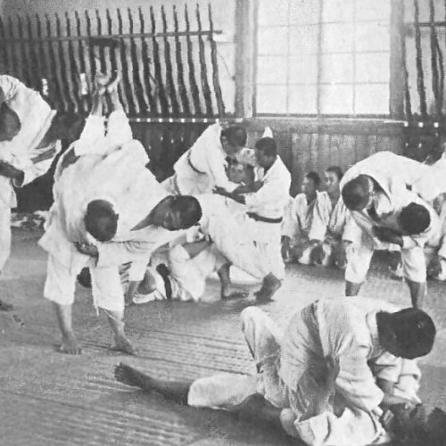
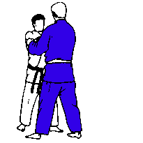

El judo es un deporte de combate, el cual se basa en derribar o proyectar al contrario contra el piso, éste suele ponerse en práctica sobre un tatami (superficie que amortigua las caídas de los peleadores), la indumentaria que se suele utilizar es denominada “Judogui” la cual es bastante resistente a los roces y jalones, este deporte es bastante exigente y por ello es necesario llevar a cabo una preparación tanto física (técnicas y táctica) como psicológica para que el atleta pueda cumplir con la exigencias del mismo.
Este deporte es una de las artes marciales que mayor número de seguidores posee en el mundo, fue creado en el año 1882 por el maestro de artes marciales Jigorō Kanō, gracias a una mezcla entre las tácticas y técnicas del Tenjun Shin’ yō-ryū y Kitō-ryū, dos de las más antiguas modalidades de combate del Jiujitso japonés, éstas dos modalidades de lucha cuerpo a cuerpo eran puestas en práctica por los antiguos samurái en las batallas hasta finales del siglo XIII y comienzo del XIX, posteriormente se logró unificar ambas técnicas en una sola escuela modalidad, llegando a tener su propia escuela, el Kodokan. A raíz del Judo, han surgido las actuales modalidades del Jiujitso brasileño, americano y europeo, así como también el sambo que proviene de Rusia, el nihon taijutsu y el Krav magá.
Se considera que es un deporte con alto nivel educativo y que sirve como herramienta para socializar, ya que su práctica desde temprana edad sirve como una técnica excepcional para educar a los niños tanto en el aspecto físico, como en el aspecto social, puesto se encarga de recalcar los valores, el respetar a todas las personas como sus iguales, la disciplina a la hora de realizar cualquier tipo de actividad, el autocontrol, el esfuerzo y el deseo de superación basados en el esfuerzo que realiza quien los practica, son algunos de los elementos que el judo ayuda a reforzar.

Jigoro Kano
Maestro de artes marciales japonés que fue el fundador del judo, y única persona en el mundo con el título de sensei ('maestro'). Miembro de una familia acomodada de altos funcionarios imperiales, fue un chico de aspecto débil y enfermizo, tercero de cinco hermanos. En 1881, a los dieciocho años de edad, se matriculó en la Facultad de Ciencias Políticas en la Universidad de Kioto. El viaje a la capital, donde las artes marciales se hallaban en su apogeo en la segunda mitad del siglo XIX, había sido un momento largamente esperado por Kano, quien poco antes había comenzado el estudio del jujutsu (técnicas de combate encaminadas a vencer al contrincante con un mínimo de fuerza), obsesionado como estaba por aprender ciertas técnicas defensivas que le permitieran paliar su fragilidad física.
Le daba vueltas en la cabeza la idea de introducir ciertas reformas en el jujutsu, porque era evidente que su delgadez le dejaba en desventaja frente a un contrincante más corpulento, así que empezó a trabajar en técnicas que requirieran un mínimo esfuerzo. Desarrolló la manera de arrojar a su oponente al suelo con sólo un giro alrededor de los hombros, una técnica a la que dio el nombre de kata-guruma, y que pronto fue seguida de otras muchas, basadas en que había que desequilibrar al contrario para poder proyectarle luego con facilidad, mediante un giro de la cadera o de los hombros. No creó un nuevo sistema de jujutsu, simplemente aplicó una serie de principios científicos y eliminó aquellas técnicas que le parecieron lesivas o peligrosas, todo lo cual le llevó a disciplinar no sólo el cuerpo, sino también el espíritu.
En 1882, con tan sólo veintidós años de edad, fundó su primer dojo (en la actualidad, 'lugar de entrenamiento para las artes marciales', pero antiguamente se denominaba así la sala de meditación de los recintos sagrados) en el templo budista de Eisho-ji de Tokio con la ayuda de sus propios alumnos, a quienes otorgó los primeros cinturones negros. Su antiguo maestro, Iikubo, pasaba dos o tres veces a la semana por el Kodokan (como llamó a su escuela) para impartir sus enseñanzas a los discípulos de Jigoro. Un año antes, en 1881, había obtenido su graduación en la Universidad Imperial de Tokio, y empezó a dar clases de literatura en la escuela Gakushuin, una exclusiva institución para los hijos de la alta sociedad japonesa.
Clases
La estructura de las clases se basan en 6 instancias que pueden variar de acuerdo al dojo donde se practique
1. Saludo: Se inicia la clase con un saludo como señal de respeto a los compañeros, al dojo, al maestro y al gran maestro quienes hacen posible dicha practica
2. Calentamiento general: Común a casi todos los deportes buscando evitar lesiones y preparandose para una actividad mas intensa
3. Ukemis: se practican técnicas de caídas, importantes para poder aprender y practicar las tecnicas relativas al Judo
4. Tandaku Renshu: Es una forma de entrenamiento en el que practicamos técnicas o desplazamientos solos, sin pareja. Busca mejorar la coordinación de las técnicas
5. Uchikomi: es un ejercicio que consiste en hacer repeticiones de una técnica. es importante intentar trabajarlos con concentración y sin cometer fallos.
6. Randori: momento de practica libre donde se pueden utilizar las técnicas practicadas en un entorno libre. El término significa literalmente "el caos de tomar"
Competencias
OBJETIVO
El JUDO, tiene como objetivo derribar al oponente usando la fuerza del mismo. En el JUDO de competición se puede vencer de cuatro (4) formas: la primera es derribando al oponente sobre su espalda (tachi waza) provocando un ippon directo. Cuando el oponente no cae perfectamente sobre su espalda el combate puede continuar en lo que se conoce como trabajo de suelo (combate de suelo, newaza), aquí se pueden aplicar estrangulamientos, torsiones a la articulación del codo (luxaciones), o inmovilizaciones que consisten en mantener controlado al oponente en el suelo con la espalda pegada al tatami.
DURACION
El tiempo de combate es similar para damas y varones: dura cinco minutos en la categoría mayores, cuatro minutos en sub17 y sub20, tres minutos en sub15 y dos minutos en sub13.
PENALIZACIONES.
Hansoku-Make: Es una acción que equivale por sí sola la descalificación del judoka, al ser penalizado con descalificación, significa conceder un IPPON al adversario.
Shido: Supone una penalización, cuando la falta cometida es leve.
PUNTAJE
Ippon: Supone un punto y por lo tanto la victoria. Se consigue por tres motivos:
Un lanzamiento que cumple cuatro criterios: control, fuerza, velocidad y ser lanzado sobre la espalda
Una inmovilización durante 25 segundos
Forzando al oponente a rendirse tras una técnica de estrangulación o luxación.
Waza-ari: Supone medio punto. Con dos waza ari obtienes un punto (ippon). El waza Ari se logra con un lanzamiento sobre la espalda al que le falta un criterio o por una inmovilización de 20 a menos de 25 segundos.
Yuko: Se obtiene con un lanzamiento de menor calidad o por una inmovilización de 15 a menos de 20 segundos.
Graduaciones
Tecnicas
TACHI-WAZA - Técnicas de proyecciones
Las técnicas TACHI-WAZA son aquellas que se basan en la proyección. Estas técnicas se dividen en 3 grupos: TE-WAZA, KOSHI-WAZA y ASHI-WAZA. En estos grupos no se incluyen las tecnicas de proyeccion en el piso ( SUTEMI-WAZA)
TE-WAZA: técnicas de hombro y brazo
KOSHI-WAZA: técnicas de cadera
ASHI-WAZA: técnicas de pie y pierna

OSAE-WAZA - Técnicas de inmovilizar
Las técnicas OSAE-WAZA son aquellas que se basan en la inmovilización, tanto de control, de estrangulamiento o de luxación. Estas técnicas se dividen en tres grupos: KATAME-WAZA (Control), SHIME-WAZA (Estrangular) y KANSTSU-WAZA (Luxar).